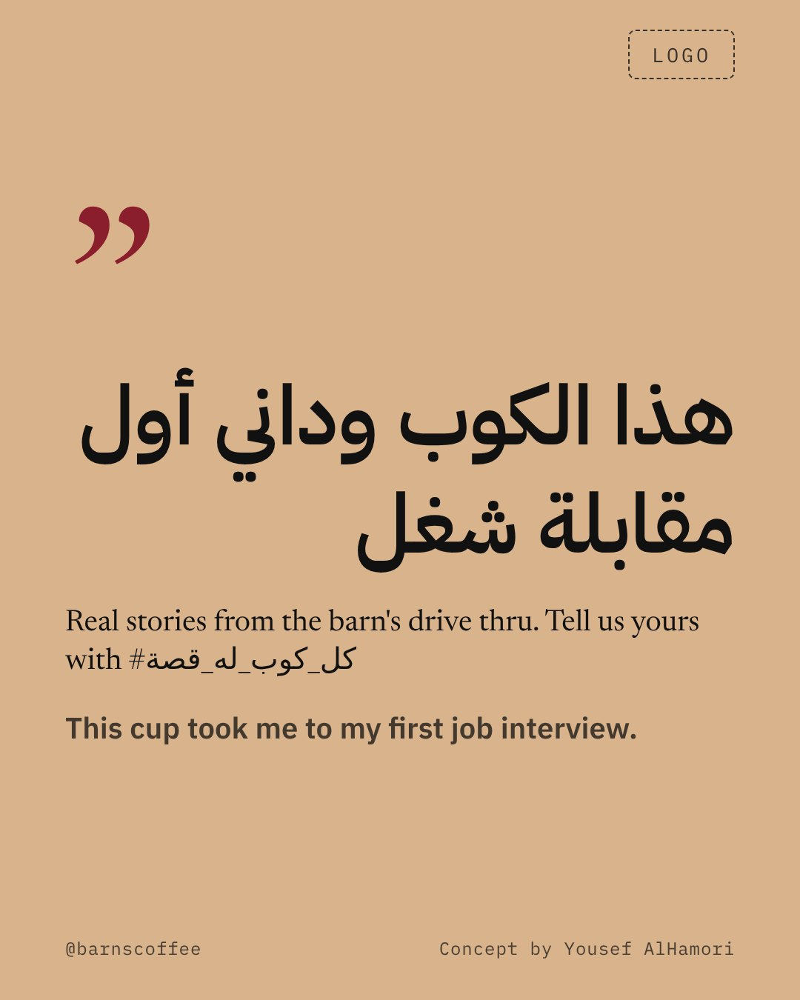
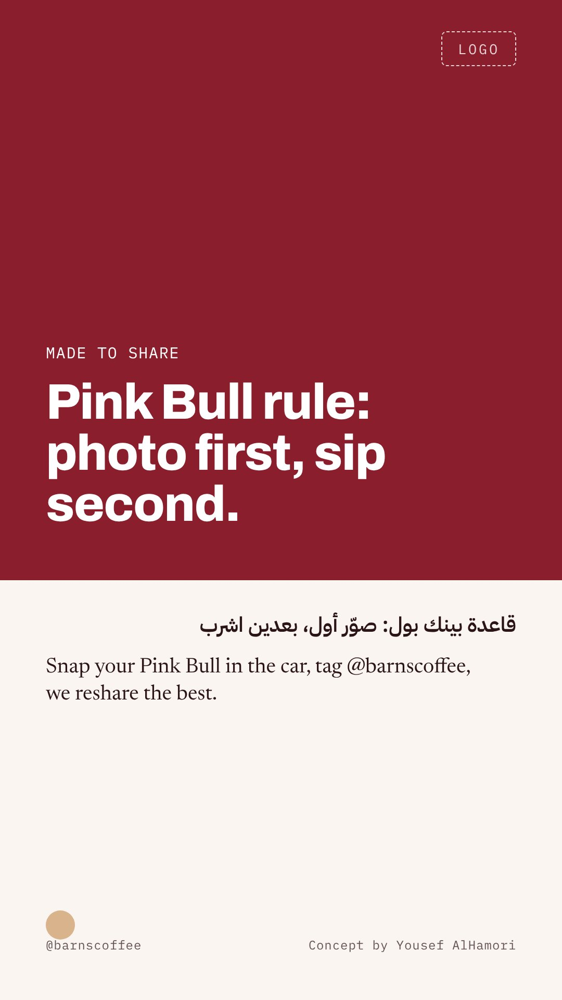
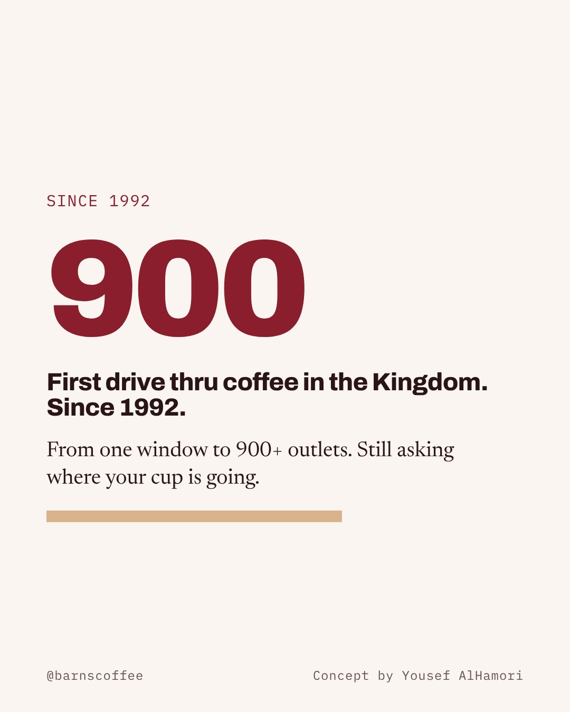

وش قصة كوبك اليوم؟ صوّره في السيارة واكتب لنا وين رايح مع #كل_كوب_له_قصة وممكن نطبع قصتك على أكواب فرعك. #بارنز #barnscoffee
Cup Stories pillar: shows the format with a relatable story and drives the first submissions.
barn's says every cup has a story. Drive Thru Stories collects them at the window.
Drive Thru Stories turns the app line Every cup has a story into a Saudi storytelling series filmed at the drive thru window, where barn's started in 1992. Customers share where their cup is going, the best stories run as weekly reels, and winners see their line printed on sleeves at their branch.
Unsolicited concept for portfolio purposes. I am not affiliated with barn's; its name and trademarks belong to the brand. Facts in the audit come from the public sources listed at the bottom. Targets are proposed, not actual results.
Three posts from the campaign, each with the caption as it would go out and the job it does. Photos are free stock images from Unsplash, standing in for a real shoot.



What the brand already does well on social, and the openings this plan goes after.
Collect 2,000 customer story submissions in 10 weeks while lifting app orders from social links by 10% (targets).
Gen Z and millennials who order from the car on the way to work, campus or a match, and photograph the drink before the first sip.
People tell their best stories from the driver's seat, but nobody at the window ever asks.
Collect 2,000 customer story submissions in 10 weeks while lifting app orders from social links by 10% (targets).
Short customer stories filmed at the drive thru window and posted by followers with the campaign hashtag.
Esports and sports culture: Team Falcons match nights, Esports World Cup moments, football and F1 orders.
Drink drops like Pink Bull with photo challenges and reshares of the best customer shots.
barn's X, new drinks in development and the 1992 drive thru origin.
| Platform | Role | Cadence |
|---|---|---|
| Main home for Cup Stories reels, drink drops and reshared customer photos. | 4 Reels per week, daily stories | |
| X | Live talk on esports and match nights, quick replies to fans and gamers. | Daily, live during matches |
| TikTok | Proposed channel for Made to Share challenges and short Cup Stories cuts aimed at Gen Z. | 4 per week |
Launch on Saudi Founding Day (22 February), a moment about Saudi roots that suits a homegrown brand from 1992, then run through spring.
At selected branches, baristas hand over the cup and ask one question: where is this cup going? The answers, filmed with consent, become a weekly series that proves every cup has a story.
How it spreadsCustomers can also post a photo of their cup in the car with #كل_كوب_له_قصة and one line about where they are headed; each week the best line is printed on cup sleeves at that customer's branch (proposed reward), which brings people back to post again.
| Time | Visual | Audio / text |
|---|---|---|
| 0 to 3s | POV from inside the drive thru window at dawn as a car pulls up and the window rolls down. | On screen text: وين رايح هالكوب؟ |
| 3 to 9s | Barista hands over the cup and asks the question; a young man in a thobe laughs before answering. | Customer (Arabic): أول يوم في الدوام الجديد |
| 9 to 15s | Fast cuts of three other drivers at different branches: a student before exams, a fan in a jersey, a mother with kids in the back. | Their real answers, beat building underneath |
| 15 to 21s | Close up of a cup sleeve with one customer's line printed on it. | On screen text: Your story could end up on our sleeves |
| 21 to 26s | Phone screen: a customer posts a cupholder photo with #كل_كوب_له_قصة. | Sound of the post sending, music lifts |
| 26 to 30s | Burgundy end card with the campaign line in Arabic and English. | On screen text: كل كوب له قصة، وش قصتك؟ barn's, since 1992 |
A two week calendar, the creators I would brief, and how the account answers people in the comments.
| Day | Platform | Format | Pillar | Post |
|---|---|---|---|---|
| W1 W1 Sun | Reel | Cup Stories | Hero reel: Drive Thru Stories episode 1 | |
| W1 W1 Mon | Carousel | Behind the Bar | 1992 to today: the drive thru origin | |
| W1 W1 Tue | X | Live posts | Game On | Team Falcons match night order poll |
| W1 W1 Wed | TikTok | Challenge | Made to Share | Photo first, sip second challenge |
| W1 W1 Thu | Story | Cup Stories | Reshare the first 10 customer cup photos | |
| W2 W2 Sun | Reel | Cup Stories | Episode 2: students before exams | |
| W2 W2 Mon | TikTok | Video | Behind the Bar | barn's X making one drink in real time |
| W2 W2 Tue | X | Thread | Game On | Your squad's order, one drink per role |
| W2 W2 Wed | Feed post | Cup Stories | Week 1 winning line on a cup sleeve | |
| W2 W2 Thu | TikTok | Video | Made to Share | Best customer drink shots of the week |
| Tier | Creator type | Why them | The ask |
|---|---|---|---|
| Micro (10k to 50k) | Local commute and morning routine vloggers | They already film the drive to work, which is exactly where the cup story happens. | A week of morning drive thru stories, one short video per day. |
| Mid (50k to 250k) | Esports streamers in the Team Falcons community | They reach gamers barn's already backs through esports, between tournaments too. | A match night barn's order on stream plus one Game On short. |
| Micro (10k to 50k) | Jeddah and Riyadh drink and cafe reviewers | Their audience follows new drinks closely and posts what they try. | A first sip review of a new drink in the car, ending with their own cup story. |
Proposed targets and the tests that would tell us what to change after week one.
| Metric | Target | Why it matters |
|---|---|---|
| Story submissions with #كل_كوب_له_قصة | Target: 2,000 in 10 weeks | Measures how many customers take part, the core of the campaign. |
| App orders from social links | Target: 10% lift over 10 weeks | Connects storytelling to sales through the app. |
| Reel shares per 1,000 views | Target: 15 | Shares show the stories are worth passing on, not only watching. |
| Game On video view through | Target: 40% average | Checks whether esports content holds attention outside tournament weeks. |
Each major choice in this plan, matched to published research. Some studies cover the wider region or global audiences; the source says which. Full list on the research page.
Consumers are 2.4 times more likely to see user generated content as authentic than brand created content, and 79% say user generated content highly impacts their purchase decisions.
A customer's own line about where they are headed is the content people trust most, and it fits the Barns idea that every cup has a story.
Stackla (now Nosto), Consumer Content Report, 201980% of people trust the brands they use, and 73% say their trust in a brand would increase if it authentically reflected today's culture.
Linking a Saudi coffee brand to Founding Day reflects culture people already celebrate, which this finding ties to higher trust.
Edelman, 2025 Edelman Trust Barometer Special Report: Brand Trust, From We to Me, 202588% of Saudi football fans aged 18 to 34 say who they watch with is important, and 74% expect their group chats to stay active through a tournament.
Fans in Saudi Arabia care who they watch with and keep group chats busy, so live match posts give Barns a place in those chats.
The Brand Berries, reporting Snapchat research conducted by OnePoll, 2026Instagram ads reached 18.2 million users and YouTube reached 27.5 million users in Saudi Arabia in late 2025.
Instagram reaches about 18 million users in Saudi Arabia, enough to carry daily cup stories to commuters between drive thru visits.
DataReportal, Digital 2026: Saudi Arabia, 2025Will a one line customer story about the trip turn more drive thru customers into posters than a standard cup photo prompt?
2 branch test over 3 weeks: one branch prompts Drive Thru Stories with a sleeve card, the other uses a generic photo prompt
2 Jeddah branches, about 6,000 orders, tracked #كل_كوب_له_قصة posts per branch
The story prompt branch produces at least twice as many tagged posts per 1,000 orders